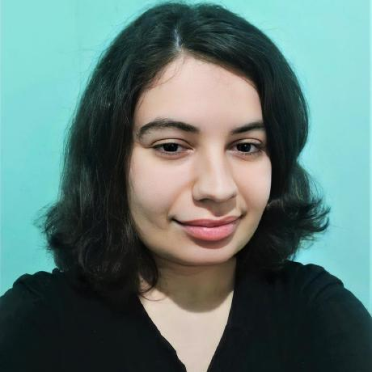

Aline Bevilacqua Caetano
Estudante de Javascript, HTML e CSS


Sobre
Olá! meu nome é Aline. Seja bem-vindo(a)!
Sou uma pessoa curiosa, determinada e esforçada (apesar de medrosa também, haha). Me apaixonei pela programação por estimular a criatividade, adoro como posso resolver uma coisa de várias maneiras diferentes! E atualmente estou estudando HTML, CSS e Javascript.
Me interesso também por design e arte/desenho tradicional e digital.
Estudei por conta própria inglês (nível intermediário) e um pouco de desenho de observação e estilo mangá.
Meus hobbies são ouvir músicas, jogar jogos variados, assistir animes e livestreams, ler mangás e desenhar.